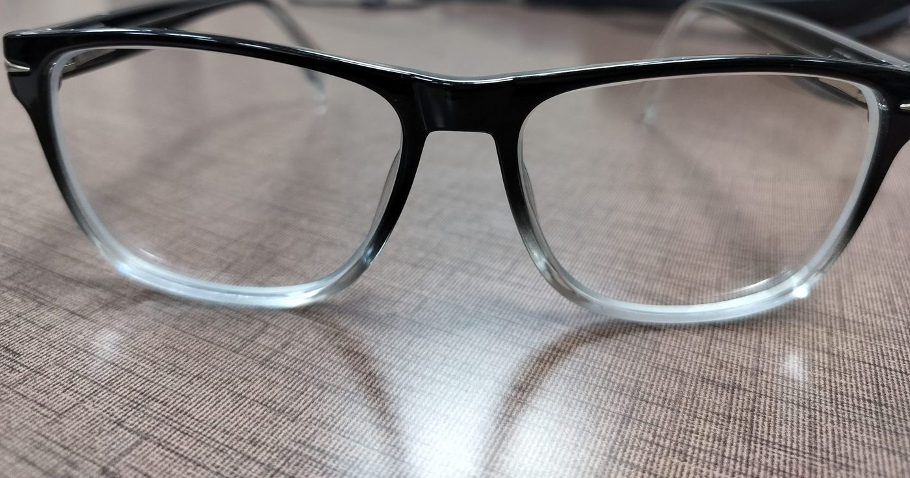
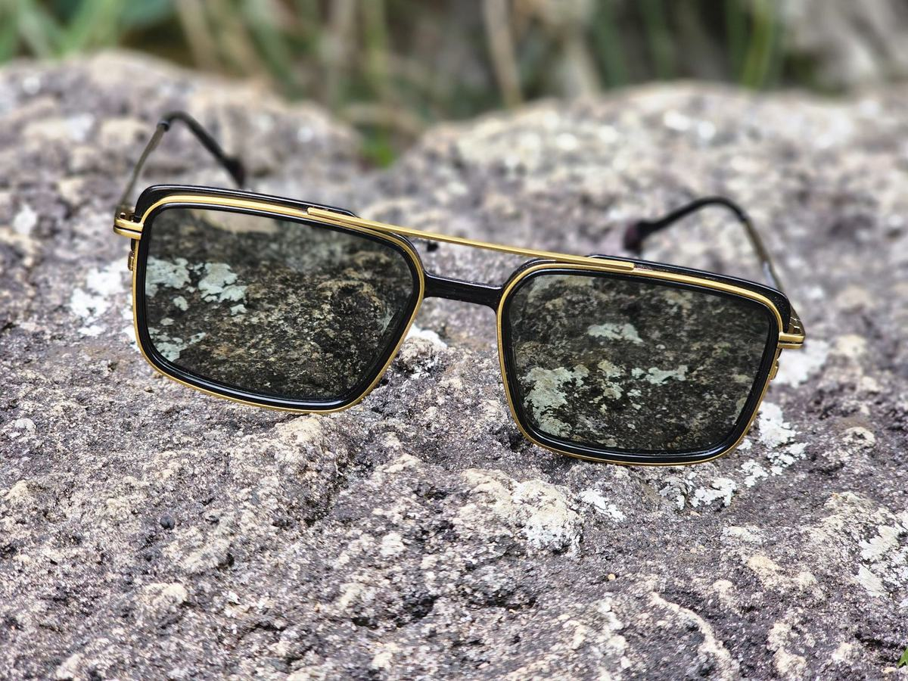
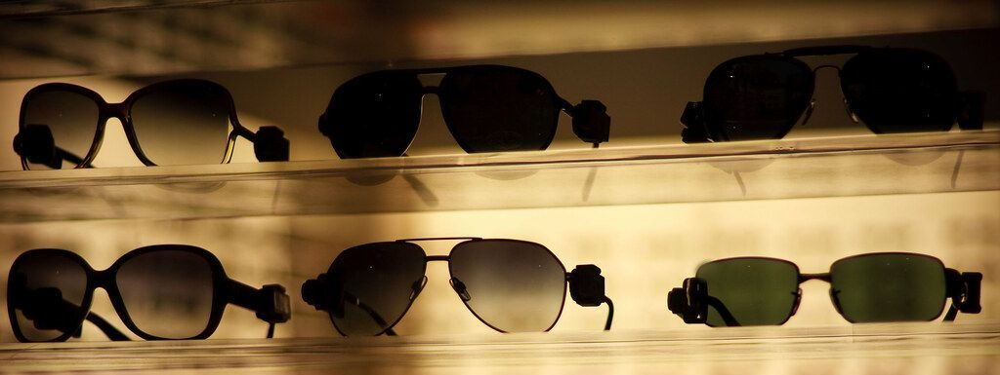

GÖZLÜK
NUMARALI VE GÜNEŞ ÇERÇEVE CAM AYAR
Deneme camını tablonun üzerinde gezdirin; telefonda dokunarak taşıyın.
Numaralı gözlükte doğru cam ve iyi oturan çerçeve, güneş gözlüğünde gerçek UV koruması. Seçim yaparken işinize yarayacak bilgileri bu sayfada topladık; gerisini mağazada birlikte konuşalım.
Numaralı gözlük
Numaralı gözlük, göz doktorunuzun yazdığı reçeteye göre hazırlanır. Reçetenizle geldiğinizde üç konuya birlikte karar veririz.
- Çerçeve
- Yüz şekliniz, burun yapınız, reçetenizin gücü ve gözlüğü gün içinde ne kadar taktığınız seçimi etkiler. Yüksek numaralarda daha küçük çerçeveler camın kenar kalınlığını azaltabilir. Fikir edinmek için çerçeve rehberine bakın.
- Cam tipi
- Tek odaklı, bifokal ya da progresif: uzak için mi, yakın için mi, ikisi için mi? Aşağıda kısaca anlattık.
- Cam özellikleri
- Yansıma önleyici kaplama, inceltilmiş cam, ışıkta koyulaşan cam gibi seçenekler. Reçetenize ve kullanımınıza uygun olanları konuşuruz.

Temsili görselCam tipleri ve özellikleri
Aynı reçete farklı camlarla hazırlanabilir. Hangisinin size uygun olduğu, gözlüğü hangi mesafede ve ne kadar süre kullandığınıza bağlıdır.
Tek odaklı
Camın her yerinde aynı güç vardır. Yalnız uzak ya da yalnız yakın için kullanılır; en yaygın cam tipidir.
Bifokal
Üst bölüm uzak, alttaki küçük bölüm yakın içindir. İki bölüm arasında görünür bir çizgi bulunur.
Progresif
Üstten alta doğru uzaktan yakına kesintisiz geçiş sağlar; çizgi görünmez. Alışma süresi kişiden kişiye değişir.
Ara mesafe (ofis)
Bilgisayar ve masa başı gibi orta ve yakın mesafeler için tasarlanmış camlardır.
Camlara eklenebilen özellikler
- Yansıma önleyici kaplama
- Cam yüzeyindeki yansımaları azaltır. Gece araç kullanırken ve ekran karşısında rahatlık sağlayabilir; karşınızdakiler de gözlerinizi daha net görür.
- Mavi ışık filtreli kaplama
- Ekranlardan gelen mavi ışığın bir kısmını süzer. Göz sağlığına etkisi konusunda bilimsel görüşler farklıdır; ihtiyacınızı göz doktorunuzla konuşabilirsiniz.
- Işıkta koyulaşan (fotokromik) cam
- Güneşteki UV ışığıyla koyulaşır, içeride yeniden açılır. Araç ön camı UV'nin çoğunu süzdüğü için araç içinde genellikle fazla koyulaşmaz.
- İnceltilmiş (yüksek indeksli) cam
- Aynı güç daha ince ve hafif bir camla elde edilir; fark yüksek numaralarda daha belirgindir.
- Darbeye dayanıklı cam
- Polikarbonat gibi malzemeler kırılmaya karşı daha dirençlidir; çocuk ve spor gözlüklerinde sık tercih edilir.
- Sert (çizilmeye dirençli) kaplama
- Organik camların yüzeyini günlük kullanımdaki ince çiziklere karşı korumaya yardımcı olur.
Sorun, bilgi verelimHangi cam ve kaplama seçeneklerinin reçetenize uygun olduğunu, mağazada neler bulunduğunu WhatsApp'tan ya da telefonla sorabilirsiniz.
Reçetenizi okuyun
Göz doktorunuzun verdiği reçetedeki kısaltmalar ilk bakışta karışık görünür. Aşağıdaki örnek reçetede bir sütuna dokunun, ne anlama geldiğini görün.
| Göz | ||||
|---|---|---|---|---|
| Sağ (R) | −1,25 | −0,50 | 180° | +1,50 |
| Sol (L) | −1,00 | −0,75 | 170° | +1,50 |
- Sağ (R / OD) ve sol (L / OS)
Reçetede her göz için ayrı satır bulunur. R ya da OD sağ gözü, L ya da OS sol gözü gösterir. İki gözün değerlerinin farklı olması olağandır.
- SPH · Sferik güç
Miyopi ya da hipermetropiyi düzelten temel güçtür; birimi diyoptridir. Eksi (−) değerler miyopiyi, artı (+) değerler hipermetropiyi gösterir.
- CYL · Silindirik güç
Astigmatı düzeltmek için eklenen güçtür. Bu kutu boşsa ya da 0 yazıyorsa astigmat düzeltmesi yok demektir.
- AKS · Eksen
Silindirik gücün camda hangi yönde duracağını gösterir; 0 ile 180 derece arasında bir sayıdır. Yalnız CYL değeri varsa anlamlıdır.
- ADD · Yakın eki
Yakını görmek için uzak gücüne eklenen değerdir. Yakın gözlüğü, bifokal ve progresif camlar bu değere göre hazırlanır.
- PD · Göz bebekleri arası mesafe
İki göz bebeğinin merkezleri arasındaki mesafedir; milimetre ile yazılır. Camların optik merkezini gözlerinizin tam önüne getirmek için kullanılır. Reçetede yoksa mağazada ölçülür.
- Uzak ve yakın satırları
Bazı reçetelerde uzak ve yakın için ayrı satırlar bulunur. Yakın satırı, uzak gücüne ADD değerinin eklenmiş hâlidir.
Reçetenizi yorumlamak ve size uygun gücü belirlemek göz doktorunuzun işidir; biz gözlüğünüzü reçeteye göre hazırlarız.
Reçetenizi WhatsApp'tan gönderin
Mesaj önizlemesi
Merhaba Batı Göz Optik ve Lens, numaralı gözlük için bilgi almak istiyorum.
WhatsApp açılınca reçetenizin fotoğrafını ataç simgesiyle ekleyin. Mesaj, siz göndermeden kimseye gitmez.
Güneş gözlüğü
Güneş gözlüğü bir aksesuar olduğu kadar gözlerinizi UV ışınlarından ve kamaşmadan korur. Seçerken koyuluğa değil, etikete bakın.
- Etiketinde UV koruması (ör. UV400) ve filtre kategorisi yazan modelleri tercih edin.
- Koyu cam, UV koruması anlamına gelmez. Korumasız koyu cam göz bebeğinin büyümesine yol açtığı için gözünüze daha çok UV ulaşabilir.
- Yüzü saran, yanlardan ışık sızdırmayan modeller daha iyi korur.
- Numaranız varsa güneşte de net görmek için numaralı güneş camı ya da ışıkta koyulaşan cam seçeneklerini sorun.

Temsili görselFiltre kategorileri: hangi koyuluk nerede?
| Kategori | Işık geçirgenliği | Uygun olduğu ışık |
|---|---|---|
| 0 | yüzde 80–100 | Kapalı alan ya da çok kapalı hava. Güneşten korunmak için değildir. |
| 1 | yüzde 43–80 | Hafif güneş, bulutlu günler. |
| 2 | yüzde 18–43 | Orta güneş; şehirde gündelik kullanım. |
| 3 | yüzde 8–18 | Güçlü güneş; deniz, yaz, açık alan. |
| 4 | yüzde 3–8 | Çok güçlü ışık; kar, yüksek dağ. Araç kullanırken takılmaz. |
Kategoriler Avrupa standardına (EN ISO 12312-1) göre verilir ve genellikle sapın iç yüzünde ya da etikette yazar.
Polarize cam ne işe yarar?
Polarize camlar sudan, yoldan ve kardan yansıyan parlamayı azaltır; deniz kenarında ve uzun yolda rahatlık sağlar. Bazı ekranlarda (araç göstergesi, telefon) görüntüyü karartabileceği için denemeden karar vermeyin.
Cam rengi neyi değiştirir?
- Gri: renkleri en az değiştirir.
- Kahverengi: kontrastı artırır, sıcak bir görünüm verir.
- Yeşil: renk ve kontrast arasında denge kurar.
- Aynalı kaplama: ışığın bir kısmını dışarı yansıtır, çok parlak ortamda kamaşmayı azaltır.

Temsili görselÇocuk gözlükleri
Çocuklar gözlüğü gün boyu, oyun oynarken de takar. Bu yüzden hafif, esnek ve doğru oturan bir model seçmek önemlidir.
- Esnek menteşe ve bükülebilir saplar düşme ve çarpmalarda çerçevenin dayanmasına yardımcı olur.
- Darbeye dayanıklı cam malzemesi oyun ve spor için daha uygundur.
- Küçük çocuklarda burun köprüsü düz olabilir; burunluklu ya da uygun köprülü modeller kaymayı azaltır.
- Kulak arkasını saran saplar ya da bir kafa bandı, hareketli çocuklarda gözlüğün yerinde kalmasını sağlar.
- Rengini ve modelini çocuğunuzun seçmesi, gözlüğü severek takmasını kolaylaştırır.
Göz kontrolü içinÇocuğunuzun göz kontrollerinin zamanı ve sıklığı için göz doktorunuza danışın. Kitaba çok yaklaşma, gözleri kısma, sık göz ovuşturma gibi durumları doktorunuza anlatın.
Tamir, ayar ve cam değişimi
Gözlüğünüz yamuk duruyor, kayıyor ya da bir yeri baskı yapıyorsa çoğu zaman küçük bir ayar yeter. Parçalara dokunun, hangisinin ne işe yaradığını görün.
Getirin, birlikte bakalımHangi onarımın yapılabileceği çerçevenin malzemesine ve hasarın yerine bağlıdır. Gözlüğünüzü mağazaya getirin ya da fotoğrafını WhatsApp'tan gönderin.
Gözlük bakımı
Küçük alışkanlıklar camların ve çerçevenin ömrünü uzatır.
Yapın
- Gözlüğü iki elinizle, saplarından tutarak takıp çıkarın.
- Camları ılık su ve biraz sıvı sabunla yıkayıp mikrofiber bezle kurulayın.
- Kullanmadığınızda sert kılıfında saklayın.
- Masaya koyarken camlar yukarı bakacak şekilde bırakın.
- Vidalarda gevşeme hissederseniz ayar için uğrayın.
Yapmayın
- Kâğıt mendil, peçete ya da giysinizin ucuyla silmeyin; ince çizikler oluşabilir.
- Sıcak araç içinde, torpidoda ya da kalorifer üstünde bırakmayın.
- Gözlüğü saçınızın üstüne takmayın; saplar açılır, gözlük gevşer.
- Kolonya, alkol ya da cam temizleyiciyle silmeyin; kaplamalara zarar verebilir.